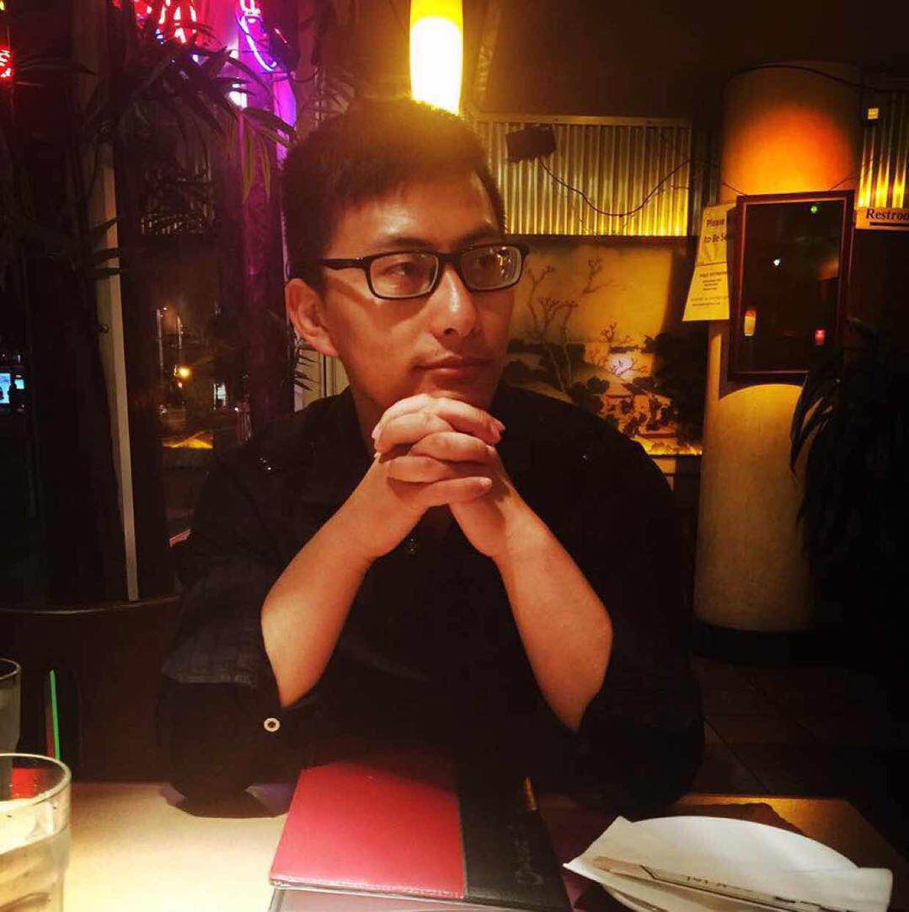

About Me
Connect with Me



My name is Dongxian Li, who is originally from Suzhou, China where is a beautiful city with many many old classic gardens with more than thousands of years. I came to San Francisco Bay Area in 2009 for my college study. For some reason, I quitted and started to work in a travel company.
Personally, I like playing tennis with my wife and listening to music in my spare time. And also, I like traveling, no matter where I go, the beautiful scenery attracts me a lot. The most favorite thing I like is playing puzzles, when I feel frustrated, it makes me calm down and keep awake.